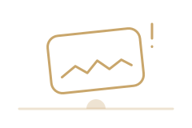
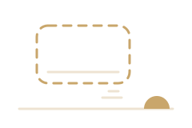
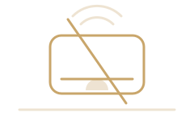

Taitube screens
States
Every surface designs five states before it ships: loading, empty, error, offline and partial (README section 8). The skeletons use the loaded layouts' own line boxes, sizes and spacing roles, so the swap moves nothing. Change the appearance in the corner to check them in every theme, mode, spacing and sizing.
Loading
A shimmer that starts after 150 ms, so a fast response never flashes. The region is aria-busy with one polite "Loading" announcement; the skeleton itself is hidden from assistive tech and from Tab.
| Video | Visibility | Status | Date | Views |
|---|
Empty
One editorial line and one action. An empty state replaces the skeleton once data settles, and it is announced once when it appears after a filter or a search.
Marta Reis Films has no videos yet
Videos Marta uploads will appear here. Subscribe and you will hear about the first one.
Nothing waiting for later
Save a video from anywhere and it will wait here, in the order you chose.

No results for “lisbon trams 1998”
Check the spelling, or try fewer words. These topics might help.

You are all caught up
New videos from channels you subscribe to, replies and live streams will show up here.
Upload your first video
Videos you upload live here with their status, visibility and views. New uploads stay private until you publish them.
Start the discussion
Nobody has commented on this video yet. Say what stayed with you.
Error
What went wrong in plain words, a way forward, and a reference the viewer can give to support. A route-level error is the page's h1; it carries no alert role on first load.

We could not load this page
Something went wrong on our side. Your connection looks fine, so trying again usually works.
Reference7f3a-91c2

We could not find that page
The link may be old, or the video may have been taken down. Search for what you were after.
You do not have access to this page
This page is for channel admins. If that seems wrong, ask the channel owner to add you.
Offline
Honest and specific: it lists what still works and what waits for the connection, not an apology. The page is in the service worker's precache, so it renders with no request, fonts included.

You are offline
Taitube cannot reach the network. This is what you can still do.
Still works
- Videos you saved for offline, 6 of them
- Your queue and Watch later, as of 14:05
- Home and Explore, as you last saw them
- Appearance and playback settings
Waits for the connection
- Comments you write, sent when you are back
- Likes, subscriptions and queue changes
- New videos, live streams and search
Partial
One section failed inside a page that did not. The message names the section, the retry reloads only it, and the section keeps its reserved height so nothing below moves. Press Try again to see the section's own skeleton, then the content.
Discussion